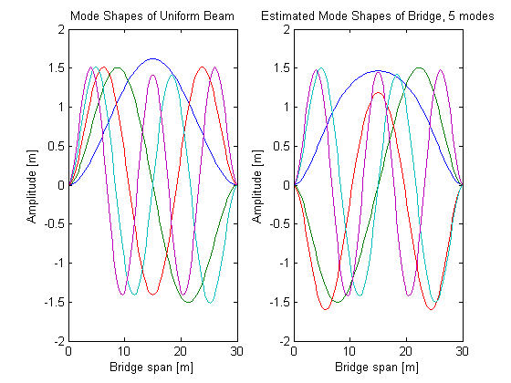
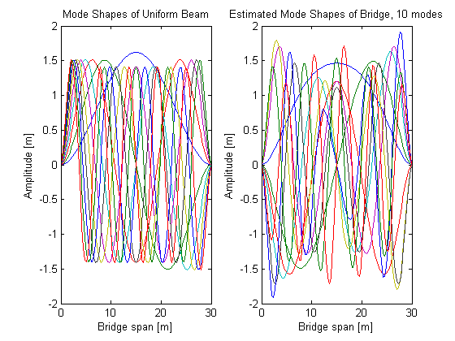
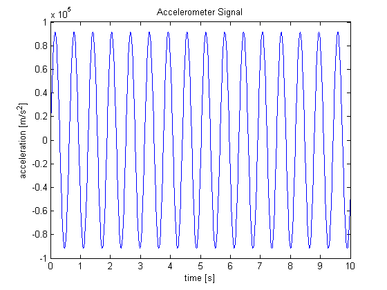

Contents
MAE6257 HW 11
Randy Schur
clear close %bridge characteristics d=8; l=30; n_modes =5; x=linspace(0,l,101); h= 6-3*cos(3.*(2.*x-l)./(2*l)); h_avg = mean(h); rho=2400; E=25*10^9; A=d*h_avg; I=d*h_avg^3/12; %a y=@(p) cos(p)*cosh(p)-1; % equation for determinant of coefficient matrix p=0; bl=0; while(length(bl)<16) %find zeros of determinant equation. z =fzero(y,p); if sum((bl==z))==0 bl(end+1)=z; end p = p+1; end beta(1)=bl(2)/l; beta(2)=bl(3)/l; beta(3)=bl(5)/l; beta(4)=bl(7)/l; beta(5)=bl(8)/l; beta=beta'; w_assumed=beta.^2.*sqrt(E.*I./(rho.*A)); %assumed natural frequencies. %let c1=1; c2=repmat((sin(beta.*l)-sinh(beta.*l))./(cos(beta.*l)-cosh(beta.*l)) ,1, length(x)); temp=beta*x; psi=sin(temp)-sinh(temp)-c2.*(cos(temp)-cosh(temp)); %mode shapes for admissible functions subplot(1,2,1), plot(x,psi) title('Mode Shapes of Uniform Beam') xlabel('Bridge span [m]') ylabel('Amplitude [m]') A=d*h; %characteristics of actual bridge I=d*h.^3./12; d2I = d/12.*(72900.*cos(45.*(2.*x-l)).*(6-2.*cos(45*(2.*x-l))).^2+437400.*sin(45.*(2.*x-l)).^2.*(6-3.*cos(45.*(2.*x-l)))); step=l/length(x); for i=1:length(beta) for j=1:length(beta) prod_M= psi(i,:).*psi(j,:)*step; prod_K= beta(i).^4.*E.*d2I./(rho.*A).*psi(i,:).*psi(j,:)*step; M(i,j)= sum(prod_M); %M=<phi_i, phi_j> K(i,j)= sum(prod_K); %K=<phi_i, L[phi_i]> end end [uk, wk]= eig(M\K); wk=sqrt(diag(wk)); [wk, ind] = sort(wk); %esitmated natural frequencies, mode shapes. uk= uk(:, ind'); phi=zeros(size(psi)); for i=1:n_modes for j=1:n_modes phi(i,:) = phi(i,:)+uk(j,i).*psi(j,:); end end subplot(1,2,2), plot(x, phi) title('Estimated Mode Shapes of Bridge, 5 modes') xlabel('Bridge span [m]') ylabel('Amplitude [m]')
b
%bridge characteristics d=8; l=30; n_modes =10; x=linspace(0,l,101); h= 6-3*cos(3.*(2.*x-l)./(2*l)); h_avg = mean(h); rho=2400; E=25*10^9; A=d*h_avg; I=d*h_avg^3/12; %a y=@(p) cos(p)*cosh(p)-1; % equation for determinant of coefficient matrix p=0; bl=0; while(length(bl)<16) %find zeros of determinant equation. z =fzero(y,p); if sum((bl==z))==0 bl(end+1)=z; end p = p+1; end beta(1)=bl(2)/l; beta(2)=bl(3)/l; beta(3)=bl(5)/l; beta(4)=bl(7)/l; beta(5)=bl(8)/l; beta(6)=bl(9)/l; beta(7)=bl(10)/l; beta(8)=bl(11)/l; beta(9)=bl(12)/l; beta(10)=bl(14)/l; w_assumed=beta.^2.*sqrt(E.*I./(rho.*A)); %assumed natural frequencies. %let c1=1; c2=repmat((sin(beta.*l)-sinh(beta.*l))./(cos(beta.*l)-cosh(beta.*l)) ,1, length(x)); temp=beta*x; psi=sin(temp)-sinh(temp)-c2.*(cos(temp)-cosh(temp)); %mode shapes for admissible functions figure subplot(1,2,1), plot(x,psi) title('Mode Shapes of Uniform Beam') xlabel('Bridge span [m]') ylabel('Amplitude [m]') A=d*h; %characteristics of actual bridge d2I = d/12.*(72900.*cos(45.*(2.*x-l)).*(6-2.*cos(45*(2.*x-l))).^2+437400.*sin(45.*(2.*x-l)).^2.*(6-3.*cos(45.*(2.*x-l)))); step=l/length(x); for i=1:length(beta) for j=1:length(beta) prod_M= psi(i,:).*psi(j,:)*step; prod_K= beta(i).^4.*E.*d2I./(rho.*A).*psi(i,:).*psi(j,:)*step; M(i,j)= sum(prod_M); %M=<phi_i, phi_j> K(i,j)= sum(prod_K); %K=<phi_i, L[phi_i]> end end [uk, wk]= eig(M\K); wk=sqrt(diag(wk)); [wk, ind] = sort(wk); %esitmated natural frequencies, mode shapes. uk= uk(:, ind'); phi=zeros(size(psi)); for i=1:n_modes for j=1:n_modes phi(i,:) = phi(i,:)+uk(j,i).*psi(j,:); end end subplot(1,2,2), plot(x, phi) title('Estimated Mode Shapes of Bridge, 10 modes') xlabel('Bridge span [m]') ylabel('Amplitude [m]')
c
loc = x(34); t= linspace(0, 10, 1000); for i=1:n_modes modal_accel(i,:) = 10000*(phi(i,34))^2*sin(10*t); end signal= zeros(1, length(modal_accel)); for i=1:n_modes signal= signal+modal_accel(i,:); end figure plot(t, signal) title('Accelerometer Signal') xlabel('time [s]') ylabel('acceleration [m/s^2]')